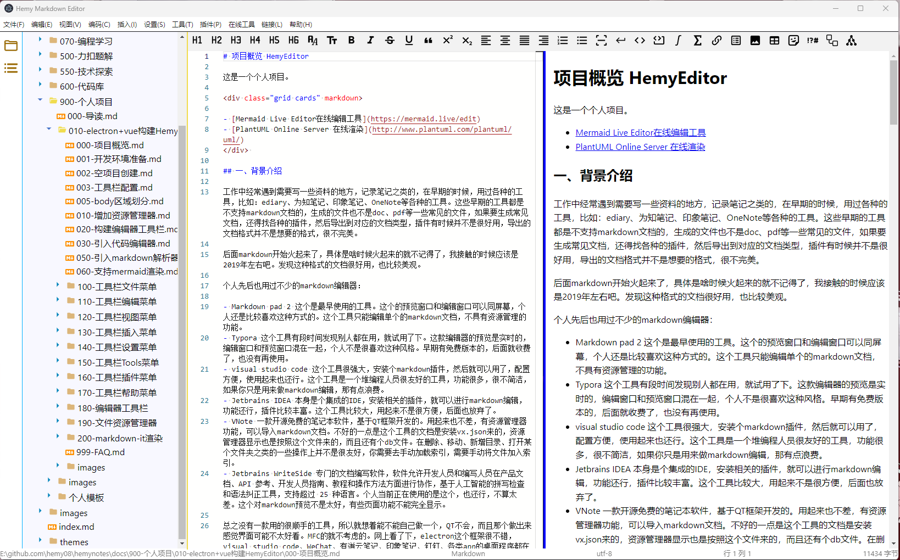

项目概览 HemyEditor¶

这是一个个人项目，命名为 白泽笔记（BaiZeNotes），基于 Electron + Vue 3 + TypeScript 构建，采用 Monaco Editor 作为核心编辑组件，支持实时预览、多格式导入导出、丰富的主题系统和强大的工具集成。
一、背景介绍¶
工作中经常遇到需要写一些资料的地方，记录笔记之类的，在早期的时候，用过各种的工具，比如：ediary、为知笔记、印象笔记、OneNote等各种的工具。这些早期的工具都是不支持markdown文档的，生成的文件也不是doc、pdf等一些常见的文件，如果要生成常见文档，还得找各种的插件，然后导出到对应的文档类型，插件有时候并不是很好用，导出的文档格式并不是想要的格式，很不完美。
后面markdown开始火起来了，具体是啥时候火起来的就不记得了，我接触的时候应该是2019年左右吧。发现这种格式的文档很好用，也比较美观。
个人先后也用过不少的markdown编辑器：
- Markdown pad 2 这个是最早使用的工具。这个的预览窗口和编辑窗口可以同屏幕，个人还是比较喜欢这种方式的。这个工具只能编辑单个的markdown文档，不具有资源管理的功能。
- Typora 这个工具有段时间发现别人都在用，就试用了下。这款编辑器的预览是实时的，编辑窗口和预览窗口混在一起，个人不是很喜欢这种风格。早期有免费版本的，后面就收费了，也没有再使用。
- visual studio code 这个工具很强大，安装个markdown插件，然后就可以用了，配置方便，使用起来也还行。这个工具是一个堆编程人员很友好的工具，功能很多，很不简洁，如果你只是用来做markdown编辑，那有点浪费。
- Jetbrains IDEA 本身是个集成的IDE，安装相关的插件，就可以进行markdown编辑，功能还行，插件比较丰富。这个工具比较大，用起来不是很方便，后面也放弃了。
- VNote 一款开源免费的笔记本软件，基于QT框架开发的。用起来也不差，有资源管理器功能，可以导入markdown文档。不好的一点是这个工具的文档是安装vx.json来的，资源管理器显示也是按照这个文件来的，而且还有个db文件。在删除、移动、新增目录、打开某个文件夹之类的一些操作上并不是很友好，你需要去手动加载索引，需要手动将文件加入索引。
- Jetbrains WriteSide 专门的文档编写软件，软件允许开发人员和编写人员在产品文档、API 参考、开发人员指南、教程和操作方法方面进行协作，基于人工智能的拼写检查和语法纠正工具，支持超过 25 种语言。个人当前正在使用的是这个，也还行，不算太差。这个对markdown预览不是太好，有些页面功能不能完全显示。
总之没有一款用的很顺手的工具，所以就想着能不能自己做一个，QT不会，而且那个做出来感觉界面可能不太好看。MFC的就不考虑的。网上看了下，electron这个框架很不错，visual studio code、WeChat、有道云笔记、印象笔记、钉钉、各类app的桌面程序都在使用这个框架，很热门。
二、当前版本信息¶
| 项目 | 版本 | 说明 |
|---|---|---|
| BaiZeNotes | 1.2.2 | 当前发布版本 |
| Electron | 43.x | 跨平台桌面应用框架 |
| Vue | 3.5.41 | 渐进式 JavaScript 框架 |
| TypeScript | 6.0.2 | 类型安全的 JavaScript 超集 |
| Vite | 8.2.2 | 下一代前端构建工具 |
| electron-vite | 6.0.0-beta.1 | Electron + Vite 集成工具 |
| Monaco Editor | 0.56.0 | VS Code 同款编辑器 |
| markdown-it | 15.0.0 | Markdown 解析器 |
| mermaid | 11.17.0 | 图表渲染库 |
| KaTeX | 0.18.4 | 数学公式渲染 |
三、功能特性¶
3.1 编辑器核心¶
Monaco Editor 集成¶
- 智能补全：Markdown 语法智能补全
- 多光标编辑：支持多光标同时编辑
- 代码折叠：支持代码块折叠
- 语法高亮：完整的 Markdown 语法高亮
- 快捷键支持：丰富的快捷键支持
实时预览¶
- Markdown 渲染：实时 Markdown 渲染
- 代码高亮：支持 100+ 编程语言高亮
- 数学公式：KaTeX 数学公式渲染
- 流程图：Mermaid 流程图、时序图、甘特图等
- PlantUML：支持 PlantUML 图表渲染
- Material 主题：支持 mkdocs material 的 Admonition、选项卡等功能
快速访问¶
- 符号插入：快速插入常用符号
- 表情插入：快速插入表情
- 自定义快捷键：支持自定义快捷键绑定
多格式支持¶
- 导入格式：Word、HTML、JSON、YAML、XML、TXT、CSV
- 导出格式：Word、JSON、XML、YAML、HTML、PDF
- 编码检测：自动检测文件编码（UTF-8、GBK、GB2312等）
- 编码转换：支持多种编码格式转换
3.2 主题系统¶
应用主题（23种）¶
- 经典主题：白泽紫韵、暖白温馨、清新简约
- 护眼主题：护眼绿、护眼米、护眼蓝、护眼粉、护眼琥珀、护眼青、护眼紫
- 特色主题：薰衣草梦、珊瑚暖阳、薄荷清风、日落余晖、玫瑰晨曦
- 深色主题：深邃夜空、深空黑曜、科技蓝
- 自然主题：海洋之心、森林绿意
编辑器主题（55种）¶
- Monaco Editor 主题同步
- 支持自定义主题
- 主题实时切换，无需重启
3.3 工具集成¶
转换工具¶
- 格式转换：JSON/CSV/YAML/TOML 互转
- 大小写转换：驼峰、下划线、短横线等
- 颜色转换：HEX、RGB、HSL 互转
- 日期转换：时间戳、日期格式转换
加密工具¶
- 加密解密：AES、DES、RSA 等多种加密算法
- 哈希计算：MD5、SHA-1、SHA-256、SHA-512
- Base64：Base64 编码解码
其他工具¶
- Mermaid 绘图：独立的 Mermaid 编辑预览窗口
- 公式编辑器：KaTeX 公式编辑
- HTML 查看：直接预览 HTML 文件
- PDF 编辑器：PDF 文件查看
3.4 资源管理¶
- 文件树：递归显示文件夹和文件
- 文件操作：新建、重命名、删除、复制、剪切、粘贴
- 右键菜单：丰富的右键操作
- 文章大纲：Markdown 标题大纲导航
- 最近打开：记录最近打开的文件和文件夹
四、项目结构¶
| Text Only | |
|---|---|
1 2 3 4 5 6 7 8 9 10 11 12 13 14 15 16 17 18 19 20 21 22 23 24 25 26 27 28 29 30 31 32 33 34 35 36 37 38 39 40 41 42 43 44 45 46 47 48 49 50 51 52 53 54 55 56 57 58 59 60 61 62 63 64 65 66 67 68 69 70 71 72 73 74 75 76 77 78 79 80 81 82 83 84 85 86 87 88 89 90 91 92 93 94 95 96 97 98 99 100 101 102 103 104 105 106 107 108 109 110 111 112 113 114 115 116 117 118 119 120 121 122 123 124 125 126 127 128 129 130 131 132 133 134 135 136 | |
五、架构说明¶
5.1 整体架构¶
白泽笔记采用 Electron 的三进程架构：
5.2 进程通信（IPC）¶
项目使用 Electron 的 IPC 机制进行主进程和渲染进程之间的通信。所有 IPC 通道定义在 src/shared/ipc-channels.ts 中，按功能分组：
WINDOW：窗口操作（最小化、最大化、关闭等）CONFIG：配置读写THEME：主题管理MENU：菜单动作EDITOR：编辑器设置FILE：文件操作FILE_MANAGER：资源管理器操作
IPC 通道定义示例
5.3 预加载脚本安全暴露 API¶
预加载脚本通过 contextBridge 安全地向渲染进程暴露 API，避免直接暴露 Node.js API：
preload/index.ts 示例
5.4 菜单栏实现¶
菜单栏采用 Vue 组件实现（非 Electron 原生 Menu），支持主题适配和灵活定制。菜单配置集中在 menu_config.ts，包含 11 个顶级菜单：
- 文件：新建、打开、导入导出、保存、退出
- 编辑：撤销、重做、剪切、复制、粘贴、查找、替换
- 视图：编辑模式、预览模式、显示/隐藏各面板、折叠展开
- 编码：重新编码打开、转换编码
- 插入：特殊字体、数学公式、表格、链接、模板、Material、Mermaid、PlantUML
- 设置：系统设置、主题设置、编辑器设置、快速链接
- 工具：Mermaid 绘图、公式编辑器、电子表格、绘图工具
- 插件：加解密、转换器、网络工具、对照表
- 在线：各类在线工具网站
- GitHub：GitHub 相关链接
- 帮助：版本发布、快捷键、使用文档、关于、检查更新
5.5 编辑器与预览¶
编辑器使用 Monaco Editor（VS Code 同款），预览使用 markdown-it 及其插件链：
5.6 配置与状态管理¶
- 配置存储：使用
electron-store在用户目录下管理配置，支持多用户独立配置（.baizenotes目录） - 状态管理：渲染进程使用自定义的
useConfigStore管理全局状态（对话框可见性、主题等） - 事件总线：
EventBus用于组件间通信 - 文件状态：自动保存文件和目录状态，应用重启后自动恢复
六、开发命令¶
| 命令 | 说明 |
|---|---|
npm run dev |
启动开发环境 |
npm run build |
构建应用（未打包） |
npm run build:win |
构建 Windows 安装包 |
npm run build:mac |
构建 macOS 安装包 |
npm run build:linux |
构建 Linux 安装包 |
npm run build:win:portable |
构建 Windows 免安装版 |
npm run typecheck |
TypeScript 类型检查 |
npm run lint |
ESLint 代码检查 |
npm run test |
运行测试 |
npm run format |
Prettier 格式化 |
七、参考¶
- Vue3 Vite electron 开发桌面程序
- Vite+Electron快速构建一个VUE3桌面应用
- vite+vue3+ts+electron桌面应用web端桌面端开发及生产打包配置！
- 基于electron-vite构建Vue桌面客户端
- 用vite的方式开发electron应用
- vue3+vite+electron开发桌面端应用流程
- 从0到1搭建electron+vite+vue3模板
- 基于Electron24+Vite4+Vue3搭建桌面端应用实战教程
- 前端必学的桌面开发：Electron+React开发桌面应用
- 学习 Electron：构建跨平台桌面应用
- Electron + Vue3 开发桌面应用
- Vue+Electron打包桌面应用(从零到一完整教程)
- WEB代码编辑器哪家强
- Web代码编辑器使用统计
八、开源软件选型¶
8.1 Electron¶
- Electron
- Electron 中文文档
- electron-vite 下一代 Electron 开发构建工具。基于 Vite，快速、简单且功能强大！
- electron-vite
- electron-vite-vue 真正简单的Electron + Vue + Vite样板。
- vite-plugin-electron vite-plugin-lectron让开发Electron应用变得和普通的Vite项目一样简单。
- awesome-vite Awesome Vite.js
8.2 Markdown解析器¶
- Remarkable 一个纯 JavaScript 的 Markdown 解析器，解析速度快而且易于扩展。100% 支持 Commonmark。
- Marked: 一款可以编译和解析markdown的开源库，支持命令行、浏览器。
- CommonMark: 是由 John MacFarlane 开发的 Markdown 解析库。
- Markdown-it 一款功能强大的Markdown解析器，支持丰富的Markdown语法，能够轻松将Markdown文本转换为HTML格式。
- Markdown-it
- markdown-it 中文文档
- markdown-it-footnote：支持脚注。
- markdown-it-task-lists：支持任务列表。
- markdown-it-abbr：支持缩写。
- markdown-it-container：支持自定义容器。
- markdown-it-anchor：为标题自动生成锚点。
- markdown-it-emoji：支持Emoji表情。
- markdown-it-highlightjs：代码高亮。
- markdown-it-plantuml：PlantUML 支持。
8.3 Vue¶
8.4 代码编辑器¶
8.5 图表渲染¶
- Mermaid 基于 JavaScript 的图表工具
- mermaid-live-editor
- plantuml github.com
- PlantUML 一览
- KaTeX 数学公式渲染